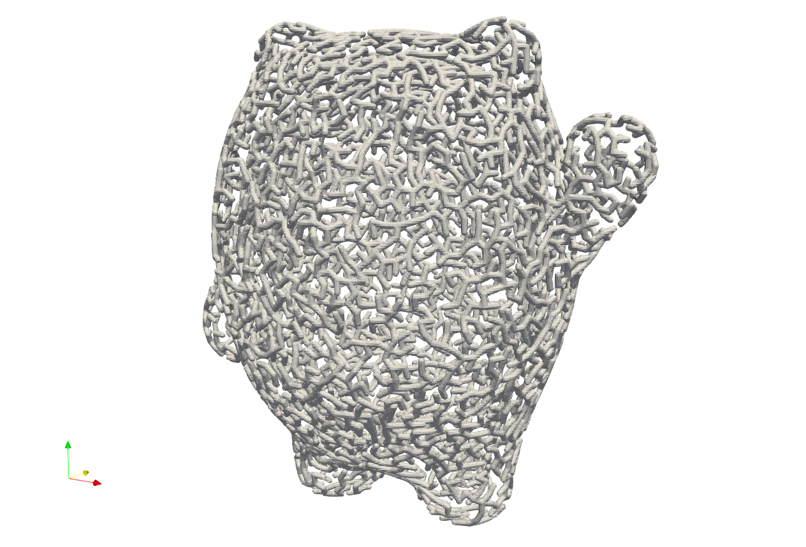
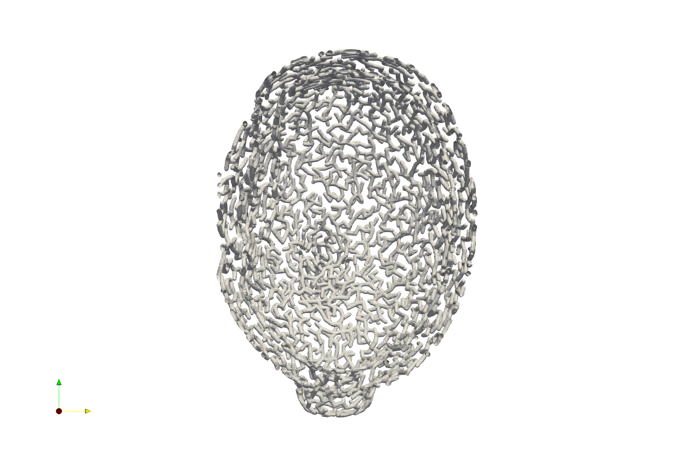
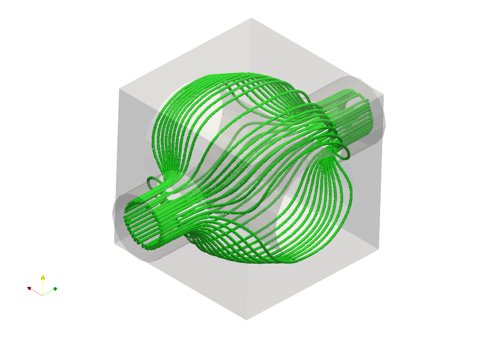
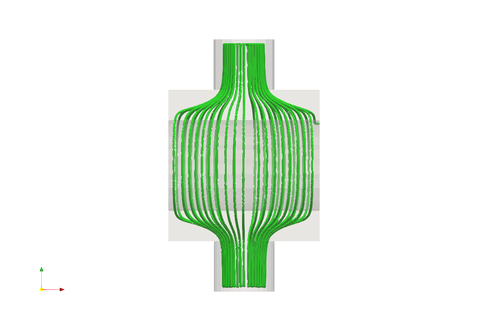
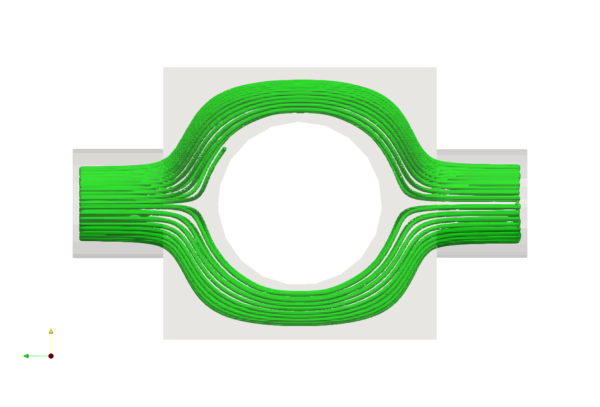

Line Structure#
Line structures that conform to complex shapes can be generated without explicitly defining lattice units or meshes. Artisan currently supports two primary approaches for constructing line structures: point-based algorithms and field-based generation. The point-based approach uses specialized algorithms to connect predefined material points, while the field-based approach allows users to leverage external fields, internal fields, and Artisan’s grid field container to build a target field and generate line structures directly from it. Future development will focus on expanding and integrating more advanced line structure generation capabilities within Artisan.
Minimum Spanning Tree#
A Minimum Spanning Tree (MST) is a graph-based optimization method used to connect a set of points with the minimum total connection cost. In a connected, weighted, undirected graph, an MST links all vertices together without forming cycles while minimizing the sum of edge weights. This makes it an efficient solution for designing lightweight networks, such as transportation systems, communication networks, and structural frameworks. In computational design, MST algorithms can be used to generate optimized line structures by efficiently connecting material points while reducing redundancy.
Example .//Test_json//MaterialPoints//BingDunDun_Infill_LR.json gives a basic workflow of generating MST line structure.
{
"Setup": {
"Type": "Geometry",
"Sample": {
"Domain": [
[0.0, 0.0],
[0.0, 0.0],
[0.0, 0.0]
],
"Shape": "Box"
},
"Geomfile": ".//sample-obj//shell_1_of_bdd_.stl",
"Rot": [0.0, 0.0, 0.0],
"res": [0.8, 0.8, 0.8],
"Padding": 1,
"onGPU": false,
"memorylimit": 161061273000
},
"WorkFlow": {
"1": {
"Gen_MaterialPoints_SurfaceLayers":{
"inp_meshfile":".//sample-obj//shell_1_of_bdd_.stl",
"depth": [0, 10],
"res":[5.0, 5.0, 1.8],
"sampling": "Poisson",
"out_matpoints_file": ".//Test_results//BingDunDun_MatPts_Grid.csv"
}
},
"2": {
"Gen_MSTMesh_Basic":{
"inp_matpoints_file":".//Test_results//BingDunDun_MatPts_Grid.csv",
"out_meshfile":".//Test_results//BingDunDun_MST_Mesh.inp"
}
},
"3":{
"Define_Lattice":{
"la_name": "MSTMesh",
"definition":{
"type": "MeshLattice",
"definition": {
"meshfile": ".//Test_results//BingDunDun_MST_Mesh.inp"
}
}
}
},
"4": {"Add_Lattice":{
"la_name": "MSTMesh",
"size": [5.0,5.0,5.0], "thk":1.2, "Rot":[0.0,0.0,0.0], "Trans":[0.0,0.0,0.0], "Inv": false, "Fill": false,
"Cube_Request": {}
}
},
"5":{
"Export": {"outfile": ".//Test_results//BingDunDun_MST_Lattice.stl"}
}
},
"PostProcess": {
"CombineMeshes": true,
"RemovePartitionMeshFile": false,
"RemoveIsolatedParts": true,
"ExportLazPts": false
}
}
Above workflow does the following operations.
Work item
1withGen_MaterialPoints_SurfaceLayersgenerates sampling points on the surface of geometry with0and10depth.Work item
2withGen_MSTMesh_Basiccomputes the MST line structure with previous generated material points and export the results as beam elements.Work item
3withDefine_Latticedefines the mesh lattice which read the mesh exported from item2.Work item
4withAdd_Latticegenerate the lattice.Work item
5withExportextracts the mesh and export the mesh into a file.
The parameters of the keyword Gen_MaterialPoints_SurfaceLayers are defined as below.
Parameter |
Details |
|---|---|
|
A file path string of the input geometry. |
|
A list of numerical values that defines the sampling surfaces. In this example, the material is sampled on the geometry surface itself (SDF depth |
|
approximated material points spacing distance in X, Y and Z direction. |
|
Sampling strategy, it supports |
|
the export file path of the generated material points. |
The parameters of the keyword Gen_MSTMesh_Basic are defined as below.
Parameter |
Details |
|---|---|
|
A file path string of the input material points file. |
|
an exported results mesh file, or mesh id in mesh container. |
Two layers of tree structures were generated based on defined depth.


Streamlines over Field#
Artisan is now focusing on the development of field based line structure without defining mesh and lattice unit. Unlike the mesh based conformal lattice, the field based line structure lattice do not rely on the pre-defined mesh, or lattice unit, user only need to produce a field that conformal to the geometry shape, and use the streamline algorithm to generate the structure.
Example Test_jsonLaplaceFieldLaplaceField_LineStructure.json shows a procedure of field based conformal line structure lattice generation using laplace field.
{
"Setup": {
"Type": "Geometry",
"Sample": {
"Domain": [
[0.0, 0.0],
[0.0, 0.0],
[0.0, 0.0]
],
"Shape": "Box"
},
"Geomfile": "..//..//sample-obj//LaplaceFieldGeometry.stl",
"Rot": [0.0, 0.0, 0.0],
"res": [1.0, 1.0, 1.0],
"Padding": 5,
"onGPU": false,
"memorylimit": 161061273000,
"JsonWorkDir": true
},
"WorkFlow": {
"1": {
"Gen_Field_Laplace": {
"inp_meshfile":"..//..//sample-obj//LaplaceFieldGeometry.stl",
"res": [2.5, 2.5, 2.5],
"sources":[75.0, 75.0, 170.0],
"source_strengths":[1000.0],
"sinks":[75.0, 75.0, -35.0],
"sink_strengths": [-1000.0],
"influence_factors": {
"radius": 50,
"kernel": "tophat"
},
"solver_factors":{
"method": "bicgstab",
"tol": 1e-3,
"maxiter":300
},
"out_fieldfile": "LaplaceField",
"is_create_on_lattice_field": false
}
},
"2":{
"Gen_Mesh_Streamlines": {
"inp_fieldfile":"LaplaceField",
"out_meshfile":"..//..//Test_results//LaplaceField_Mesh.inp",
"source": [75.0, 75.0, 170.0],
"sink": [75.0, 75.0, -35.0],
"step": 1.5,
"num_integration_steps": 350,
"num_streamlines_seeds": 100,
"source_plane_dir": [0.0, 0.0, -1.0],
"source_plane_radius": 20.0,
"min_streamlines_spacing": 2.0
}
},
"3": {
"Define_Lattice":{
"la_name": "LaplaceStreamLines",
"definition": {
"type": "MeshLattice",
"definition": {
"meshfile": "..//..//Test_results//LaplaceField_Mesh.inp",
"k" : 0.0
}
}
}
},
"4": {"Add_Lattice":{
"la_name": "LaplaceStreamLines",
"size": [10.0,10.0,10.0],
"thk":1.2, "Rot":[0.0, 0.0, 0.0], "Trans":[0.0, 0.0, 0.0],
"Inv": false, "Fill": true, "Cube_Request": {}
}
},
"999":{"Export": {"outfile": "..//..//Test_results//LaplaceField_LineMeshLattice.stl"}}
},
"PostProcess": {
"CombineMeshes": true,
"RemovePartitionMeshFile": false,
"RemoveIsolatedParts": true,
"ExportLazPts": false
}
}
Above workflow does the following operations.
Work item
1withGen_Field_Laplacesolves the laplace equation with defined source and sink points.Work item
2withGen_Mesh_Streamlinesreads the field, and generates the streamlines of the field.Work item
3withDefine_Latticedefines the mesh lattice which read the mesh exported from item2.Work item
4withAdd_Latticegenerate the lattice.Work item
5withExportextracts the mesh and export the mesh into a file.
The Gen_Field_Laplace keyword solves a well-defined Laplace equation over the specified domain. In this formulation, the given geometry is treated as the boundary, with a zero normal flux boundary condition applied, for example, effectively modeling the boundary as a perfectly insulated layer, analogous to a heat transfer conduction problem with no flux across the surface.
The parameters of the keyword Gen_Field_Laplace are defined as below.
Parameter |
Details |
|---|---|
|
A mesh ID or file path of defined geometry as boundary of the field problem. |
|
A list of numerical values that defines the sampling surfaces. In this example, the material is sampled on the geometry surface itself (SDF depth |
|
A list of 3 float numbers defining the coordinate of source. |
|
Strength of the source, usually this is a positive number. |
|
A list of 3 float numbers defining the coordinate of sink. |
|
Strength of the sink, usually this is a negative number. |
|
This defines the source and sink influence volumes, it contains two parameters, |
|
|
|
the export ID or file path for the field results. |
|
if |
The keyword Gen_Mesh_Streamlines generates the stream lines from field as beam element based mesh. User may use this mesh as tool mesh, for example, to generate the pipe lines for fluids driven heat transferring application.
The parameters of the keyword Gen_Mesh_Streamlines are defined as below.
Parameter |
Details |
|---|---|
|
A field ID or a field file path as input field. |
|
A mesh ID or mesh file path for exporting results. |
|
A coordinate of the source point. |
|
A coordinate of the sink point, e.g. stop point. |
|
The number of numerical integration steps. |
|
The keyword will define a circle area for generating a number of seed points to start computing the stream lines, |
|
The radius of the circle around the |
|
The total number of candidate seed points of the starting points of stream lines. Please note, the some candidates will be removed from results if neighboring two lines are smaller than the |
|
minimum spacing between two neighboring stream lines, if less than, one stream line will be removed from result. |
Below, the streamline lattice is overlaid within the specified geometric domain. The generated lattice, highlighted in green, conforms perfectly to the given geometry. Users can further generate multiple layers to fill the remaining available space.


